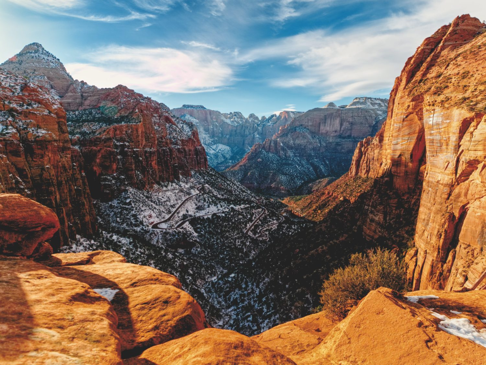
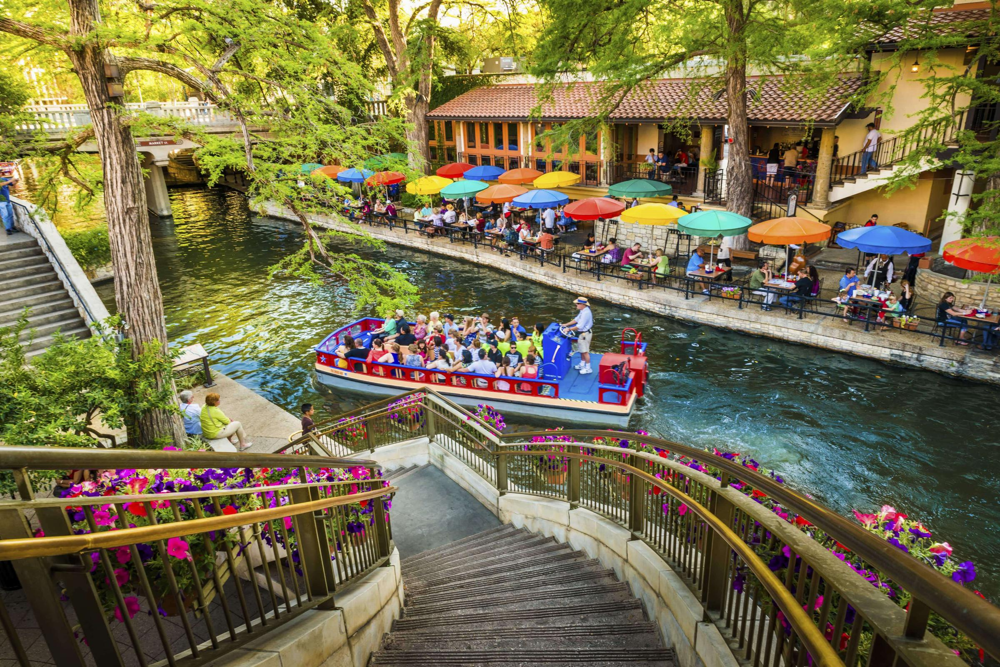

Three Unique Travel Experiences in the US
- St. George, Utah

- Visit one of many National Parks; Zion, Arches, Bryce Canyon, Canyonlands, Bears Ears, Capitol Reef
- Stay more local and visit Snow Canyon State Park or Sand Hollow Reservoir
- Watch a play at Tuacahn Ampitheater Center for the Arts
- New Orleans, Louisiana

- Tour the Bayou on a swamp tour
- Go to a Mardi Gras parade (in February)
- Try alligator, gumbo, and jambalaya
- San Antonio, Texas

- Fill up gas and get food at Buc-ees
- Visit the Riverwalk in San Antonio
- Try some delicious Tex-Mex or BBQ